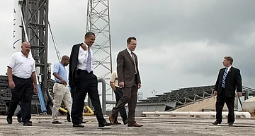
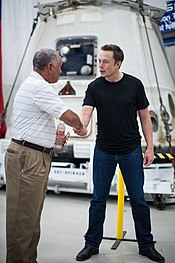
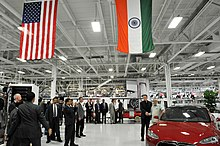
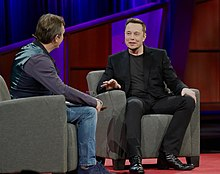

Elon Reeve Musk FRS(/ˈiː
lɒn/
; born June 28, 1971) is a technology entrepreneur, investor, and engineer.[11][12][13] He holds South African, Canadian, and U.S. citizenship and
is the founder,
CEO, and lead designer of SpaceX;[14] co-founder, CEO, and product
architect of
Tesla, Inc.;[15] co-founder and
CEO of
Neuralink; founder of The
Boring
Company;[16] co-founder and co-chairman of OpenAI;[17] and co-founder of PayPal. In December 2016,
he was ranked 21st on the Forbes list of The World's Most Powerful
People.[18] As of October 2018,[update] he has a net worth of $22.8 billion and is listed by
Forbes as the 54th-richest person in the
world.[19]
Born and raised in Pretoria, South Africa, Musk moved to
Canada when he was 17 to attend Queen's University. He
transferred to the University of Pennsylvania two
years later, where he received an economics degree from the Wharton School and a degree in physics
from the
College of Arts and
Sciences. He began a Ph.D. in applied physics and material sciences at Stanford
University in 1995 but dropped out after two days to pursue an entrepreneurial career. He
subsequently co-founded Zip2, a web software company, which was acquired by
Compaq for $340 million in 1999. Musk then founded X.com, an online bank. It merged with Confinity
in 2000 and later that year became PayPal,
which was bought by eBay for $1.5 billion in October 2002.[20][21][22][23]
In May 2002, Musk founded SpaceX, an aerospace manufacturer and space transport services company, of
which he is CEO and lead designer. He helped fund Tesla, Inc., an electric vehicle and solar panel
manufacturer, in 2003, and became its CEO
and product architect. In 2006, he inspired the creation of SolarCity,
a solar energy services company that is now a subsidiary of Tesla, and operates as its chairman. In
2015, Musk co-founded OpenAI,
a nonprofit research company that aims to promote friendly artificial
intelligence. In July 2016, he co-founded Neuralink, a neurotechnology company focused on developing
brain–computer interfaces, and is its CEO. In December
2016, Musk founded The Boring Company, an infrastructure and
tunnel-construction company.
In addition to his primary business pursuits, Musk has envisioned a high-speed transportation system
known as the
Hyperloop, and has proposed a vertical
take-off and
landing supersonic jet electric aircraft with electric
fan propulsion, known as the Musk electric jet.[24][25] Musk has stated that the goals of SpaceX, Tesla, and SolarCity
revolve around his vision to change the world and humanity.
[26] His goals include reducing global
warming through sustainable energy production and
consumption, and reducing the risk of human extinction by establishing a human colony on Mars.[27]
Contents
Early life
Musk was born on June 28, 1971, in Pretoria, Transvaal, South Africa,
[28] the son of Maye Musk (
née Haldeman), a model and dietitian from Regina, Saskatchewan, Canada,
[29] and Errol Musk, a South African electromechanical engineer, pilot, and sailor. He has a
younger brother, Kimbal (born 1972), and a younger sister, Tosca (born 1974).[33] His
maternal grandfather, Dr. Joshua Haldeman, was an American-born Canadian.
[34][35] His paternal grandmother
was British, and he also has Pennsylvania Dutch ancestry.
[36][37] After his parents
divorced in 1980, Musk lived mostly with his father in the suburbs of Pretoria,[36] which Musk chose two years after his parents split up, but now
Musk says it was a mistake.[38] As an adult, Musk has severed
relations with his father, whom he
has referred to as "a terrible human being".
[38] He has a half-sister
[39] and a half-brother.
[40]
During his childhood, Musk was an avid reader.[41] At the age of 10,
he developed an interest in computing with the Commodore VIC-20.[42] He taught
himself computer programming at the age of 10, and by the
age of 12 sold the code of a BASIC-based video game he created called Blastar, to a magazine called
PC and Office
Technology, for approximately $500.[43][44] A web version of the game is available online.[43][45] His childhood reading
included Isaac Asimov's Foundation series, from which he drew the lesson that "you
should try to take the set of actions that are likely to prolong civilization, minimize the probability
of a dark age and reduce the length
of a dark age if there is one."
[38]
Musk was severely bullied throughout his childhood[38] and was once
hospitalized when a group of boys threw him down a flight of
stairs and then smashed his head into the pavement until he lost consciousness. He later revealed that he had to get a nose job, to repair the damage.[41][46]
Musk attended Waterkloof House Preparatory
School and
Bryanston High School[46] before graduating from
Pretoria Boys High School. Although Musk's father
insisted that Elon go to college in Pretoria, Musk became determined to
move to the United States. As
he states, "I remember thinking and seeing that America is where great things are possible, more than
any other country in the world."[47] Knowing it would be easy to get
to the United States from Canada,
he moved to Canada against his father's wishes in June 1989, just before his 18th
birthday,[48] after obtaining a Canadian passport
through his Canadian-born mother.
[49][50]
Education
At the age of 17, in 1989, Elon Musk moved to Canada to attend Queen's
University, avoiding mandatory service in the South African military. He left in 1992 to study
business and physics at the University
of Pennsylvania, and graduated with an undergraduate degree in economics and stayed for a second
bachelor's degree in physics.
After leaving Penn, Elon Musk headed to Stanford University
in California to pursue a PhD in energy physics. However, his move coincided with the Internet boom,
and he dropped out of Stanford after just two days to become a part of it, launching his first company,
Zip2 Corporation.
[51]
X.com and PayPal
In March 1999, Musk co-founded X.com, an online financial services and e-mail payment company, with US$10 million from the sale of Zip2.
[48][52][54] One year later, the company merged with Confinity,[53][56] which had a money-transfer service called PayPal. The merged company focused on the PayPal service and was renamed PayPal
in 2001. PayPal's early growth was driven
mainly by a viral marketing campaign where new customers were
recruited when they received money through the service.[57] Musk was
ousted in October 2000 from his
role as CEO (although he remained on the board) due to disagreements with other company leadership,
notably over his desire to move PayPal's
Unix-based infrastructure to Microsoft
Windows.[58] In October 2002, PayPal was acquired by eBay for US$1.5 billion in stock, of which Musk received US$165
million.
[59] Before its sale, Musk, who was the company's largest shareholder, owned 11.7% of PayPal's shares.[60]
In July 2017, Musk purchased the domain x.com from PayPal for an undisclosed amount, stating that it has
sentimental value to him.[61]
SpaceX
Main article: SpaceX
Wikinews has related news:
SpaceX Falcon Heavy rocket blasts Elon Musk's personal Tesla into solar orbit
In 2001, Musk conceptualized Mars Oasis, a project to land a miniature
experimental greenhouse on Mars, containing food crops growing on
Martian regolith,
in an attempt to regain public interest in space exploration.
[62][63] In October 2001, Musk
travelled to Moscow with Jim Cantrell (an aerospace supplies fixer), and
Adeo Ressi (his best friend from college), to buy refurbished Dnepr Intercontinental
ballistic missiles (ICBMs) that could send the envisioned payloads into space. The group met
with companies such as NPO
Lavochkin and Kosmotras; however, according to Cantrell, Musk
was seen as a novice and was consequently spat on by one of the Russian chief designers,[64] and the group returned to the United States empty-handed. In
February 2002, the group returned to Russia to look for three ICBMs, bringing along Mike Griffin.
Griffin had worked for the CIA's venture
capital arm, In-Q-Tel, as well as NASA's
Jet Propulsion Laboratory, and was just leaving Orbital Sciences, a maker of satellites and spacecraft. The
group met again with Kosmotras, and
were offered one rocket for US$8 million; however, this was seen by Musk as too expensive; Musk
consequently stormed out of the meeting. On the flight back from Moscow, Musk realized that he could
start a company that could build
the affordable rockets he needed.[64] According to early Tesla and
SpaceX investor Steve Jurvetson,[65] Musk calculated that the
raw materials for building a rocket actually were only 3 percent
of the sales price of a rocket at the time. It was concluded that theoretically, by applying vertical integration and the modular approach from software
engineering, SpaceX could cut launch price by a factor of ten and still enjoy a 70-percent gross margin.[66] Ultimately, Musk
ended up founding SpaceX with the long-term goal of creating a true spacefaring civilization.[67]

Musk and President Barack Obama at the
Falcon 9 launch site in 2010
With US$100 million of his early fortune,[68] Musk founded
Space Exploration Technologies, or SpaceX, in May 2002.[69] Musk is chief
executive
officer (CEO) and chief technology officer
(CTO) of the
Hawthorne, California-based company. SpaceX develops and
manufactures space launch vehicles with a focus on advancing the
state of rocket technology.
The company's first two launch vehicles are the Falcon 1 and Falcon 9 rockets (a nod to Star Wars'
Millennium Falcon), and its first spacecraft is the Dragon (a nod to Puff the
Magic Dragon).[70] In seven years, SpaceX designed
the family of Falcon launch vehicles and the Dragon multipurpose spacecraft. In September 2008, SpaceX's
Falcon 1 rocket became the first
privately funded liquid-fueled vehicle to put a satellite into Earth orbit.[41] On May 25, 2012, the SpaceX Dragon vehicle berthed with the ISS, making history as the first commercial company to launch and berth a vehicle to the
International Space Station.[71]

NASA Administrator Charles Bolden
congratulates Musk in front of the Dragon capsule in 2012
In 2006, SpaceX was awarded a contract from NASA to continue the development and test of the SpaceX
Falcon 9 launch vehicle and Dragon
spacecraft in order to transport cargo to the International Space Station,[72][not
in citation given] followed by a US$1.6 billion NASA Commercial Resupply Services program contract on
December 23, 2008, for 12 flights of its
Falcon 9 rocket and Dragon spacecraft to the Space Station, replacing the US Space
Shuttle after it retired in 2011.[73] Astronaut transport to
the ISS is currently handled solely by the Soyuz, but SpaceX is
one of two companies awarded
a contract by NASA as part of the Commercial Crew
Development program, which is intended to develop a US astronaut transport capability by 2018.
[74]
Musk believed that the key to making space travel affordable is to make rockets reusable, Though most
experts in the space industry did not believe that reusable rockets were possible or feasible.[75] On December 22, 2015, SpaceX successfully landed the first stage
of its Falcon rocket back at the launch pad. This was the first time
in history such a feat had
been achieved by an orbital rocket and is a significant step towards rocket reusability lowering the
costs of access to space.
[76] This first stage recovery was replicated several times in 2016
by landing on an autonomous spaceport drone
ship, an ocean-based recovery platform,[77] and by the end of
2017, SpaceX had landed and recovered the first stage on 16 missions in a row where a landing and
recovery were attempted, including
all 14 attempts in 2017. 20 out of 42 first stage Falcon 9 boosters have been recovered overall since
the Falcon 9 maiden flight in 2010.
[78] In the most recent full year—2017—SpaceX launched 18 successful
Falcon 9 flights, more than doubling their highest previous year of 8.[79]
On February 6, 2018, SpaceX successfully launched the Falcon Heavy,
the fourth-highest capacity rocket ever built (after Saturn V, Energia and
N1) and the most powerful rocket in operation as of 2018[update]. The inaugural
mission carried a Tesla Roadster belonging to
Musk as a dummy payload.[80]
SpaceX is both the largest private producer of rocket engines in the world and holder of the record for
the highest thrust-to-weight ratio for a rocket engine
(the Merlin 1D).
[81][82] SpaceX has produced more
than 100 operational Merlin 1D engines. Each Merlin 1D engine can vertically lift the weight of 40
average family cars. In combination,
the 9 Merlin engines in the Falcon 9 first stage produce anywhere from 5.8 to 6.7 MN (1.3 to
1.5 million pounds) of thrust, depending on altitude.[83]
Musk was influenced by Isaac Asimov's Foundation series[84] and
views space exploration as an important step in preserving
and expanding the consciousness of human life.[85] Musk said that
multiplanetary life may serve as a hedge against threats to the survival of the human species.
An asteroid or a super volcano could destroy us, and we face risks the dinosaurs never saw: an
engineered virus, inadvertent creation of a micro black
hole, catastrophic global warming or some as-yet-unknown technology could spell the end of
us. Humankind evolved over millions of years, but in the last sixty years atomic weaponry created
the potential to extinguish ourselves.
Sooner or later, we must expand life beyond this green and blue ball—or go extinct.
Musk's goal is to reduce the cost of human spaceflight by a
factor of 10.
[86] In a 2011 interview, he said he hopes to send humans to Mars'
surface within 10–20 years.
[87] In Ashlee Vance's biography, Musk
stated that he wants to establish a Mars
colony by 2040, with a population of 80,000.[42] Musk stated that,
since Mars' atmosphere lacks oxygen, all transportation would have to be electric (electric cars,
electric trains, Hyperloop, electric
aircraft).
[88] Musk stated in June 2016 that the first unmanned flight of the
larger Mars Colonial Transporter (MCT) spacecraft is
aimed for departure to the red
planet in 2022, to be followed by the first manned MCT Mars flight departing in 2024.[89] In September 2016, Musk revealed details of his architecture to explore and
colonize Mars.[90] By 2016, Musk's private trust holds 54% of
SpaceX stock, equivalent to 78% of voting shares.[91]
In late 2017, SpaceX unveiled the design for its next-generation launch vehicle and spacecraft system—BFR—that would support all SpaceX launch service provider capabilities with a single set of very
large vehicles: Earth-orbit, Lunar-orbit, interplanetary missions, and
even intercontinental passenger transport on Earth,
and totally replace the Falcon 9, Falcon Heavy and Dragon vehicles in the 2020s. The BFR will have a
9-meter (30 ft) core diameter. Significant development on the vehicles began in 2017, while the new
rocket engine development began
in 2012.[92][93]
Tesla
Tesla, Inc. (originally Tesla Motors) was incorporated in July 2003 by Martin
Eberhard and Marc Tarpenning, who financed the company
until the
Series A round of funding.[94]
Both men played active roles in the company's early development prior to Elon Musk's involvement.[95] Musk led the Series A round of investment in February 2004,
joining Tesla's board of directors as its chairman.[96] Musk took an
active role within the company
and oversaw Roadster product design at a detailed level, but was not deeply involved in day-to-day
business operations.
[97]
Following the financial crisis in 2008 and after a
series of escalating conflicts in 2007, Eberhard was ousted from the firm.[75][98] Musk assumed leadership
of the company as CEO and product architect, positions he still holds today. Tesla Motors first built an
electric sports car, the
Tesla Roadster in 2008, with sales of about 2,500 vehicles
to 31 countries. Tesla began delivery of its four-door Model S
sedan on June 22, 2012. It
unveiled its third product, the Model
X, aimed at the SUV/minivan market,
on February 9, 2012; however, the Model X launch was delayed until September 2015.
[99][100][101] In addition to its own cars, Tesla sells electric powertrain systems to Daimler for the Smart EV,
Mercedes B-Class Electric Drive and
Mercedes A Class, and to Toyota for the RAV4 EV. Musk was able to bring in
both companies as long-term investors in Tesla.[102]
Musk has favored building a sub-US$30,000 compact Tesla model and building and selling electric vehicle
powertrain components so that other automakers can produce electric vehicles at affordable prices
without having to develop the products
in-house; this led to the Model 3 that is planned to have a base
price of US$35,000.
[103] Several mainstream publications have compared him with Henry Ford for his work on advanced vehicle powertrains.[104]
In a May 2013 interview with All Things Digital, Musk said
that to overcome the range limitations of electric cars, Tesla is expanding its network of supercharger
stations, tripling the number on
the East and West coasts of the U.S. that June, with plans for more expansion across North America, including Canada, throughout the year.[105] As of January 29, 2016[update], Musk owns about 28.9 million Tesla shares, which
equates to about 22% of the company.[106][107]
As of 2014[update], Musk's annual salary is one dollar, similar to that of Steve
Jobs and other CEOs; the remainder of his compensation is in the form of stock and
performance-based bonuses.[108][109]
In 2014, Musk announced that Tesla would allow its technology patents to be used by anyone in good faith in a bid to entice automobile manufacturers to speed up
development of electric cars. "The unfortunate
reality is electric car programs (or programs for any vehicle that doesn't burn hydrocarbons) at the major manufacturers are small to non-existent,
constituting an average of far less than 1% of their
total vehicle sales," Musk said.[110]
In February 2016, Musk announced that he had acquired the Tesla.com domain
name from Stu Grossman, who had owned it since 1992, and changed Tesla's homepage to that
domain.
[111]
In January 2018, Musk was granted an option to buy up to 20.3 million shares if Tesla's market value were
to rise to $650 billion. Majority shareholder approval was pending As of 5 March 2018[update].[112] The grant was also
meant to end speculation about Musk's potential departure from Tesla to devote more time to his other
business ventures.
[113] A report by advisory firm Glass Lewis & Co. to its clients
argued against granting the options.[112][needs
update]
The New York Post described the pending stock option grant
as an "astronomical deal" in pay when it reported that Tesla accepted $750 million in public funds from
New York Governor Andrew Cuomo as part of the Buffalo Billion project, a plan to invest money to help the economy of
the Buffalo, New York area. The money was used to build a factory and infrastructure for solar panel
maker
SolarCity, which Tesla acquired. As of March 2018[update], the plant employed "just a few hundred workers and its
future remains uncertain." (The Buffalo area actually lost nearly 5,000 jobs between December 2016 and
December 2017).
[114]

Musk with Indian Prime Minister Narendra Modi in San Jose,
California on September 26, 2015
In September 2018, Musk was charged by the U.S.
Securities and Exchange Commission for a tweet claiming that
funding had
been secured for taking Tesla
private. The lawsuit characterized the tweet as false,
misleading, and damaging to investors, and sought to bar Musk from serving as CEO on
publicly traded companies.[115][116] Two days later, Musk
reached a settlement with the SEC. As a result, Musk and Tesla were fined $20 million each, and Musk was
forced to step down as Tesla
chairman within 45 days while remaining Tesla's CEO.
[117] Musk also proclaimed in several interviews since that he does
not regret sending the tweet that triggered the SEC investigation. According to Reuters, Musk said the
tweet that cost him and the company
$20 million in fines was "Worth It".[118] Musk also went on to tweet
on October 1, 2018 a link to "
O.P.P." by Naughty by
Nature as a take on what had happened between him and the SEC.
According to ABC News, "As recently as Oct. 4 2018, Musk issued a sarcastic tweet, describing the agency
[SEC] as the “Shortseller Enrichment Commission,” despite having agreed to settlement terms a week
earlier that his company, Tesla, would
monitor his tweets and other communications."[119]
In a December 2018 interview with CBS’s “60 Minutes”, Musk mentioned that since reaching an agreement
with SEC, none of his tweets have been censored. He further mentioned that he has no respect for the SEC
by saying, "I want to be clear.
I do not respect the SEC."[120]
Following Musk's resignation as chairman, Tesla named Robyn Denholm
to replace Elon Musk as the acting chairman. This decision came after weeks of speculation on whether
Tesla would nominate James Murdoch.[121]
In January 2019, Musk traveled to China for the groundbreaking of Tesla's Shanghai Gigafactory, which is the company's first large-scale plant
outside the U.S.
[122] Part of his visit to China, Musk also met the Chinese premier
Li Keqiang. During their exchange, Musk confessed his love for China
and wished he could visit China more often, to which the Chinese premier was quoted as saying "We can
issue you a Chinese green card
if that helps."
[123]
On 19th February 2019, according to Forbes, Musk stated in a tweet that Tesla would build half a million
cars in 2019. Dane Butswinkas, who arrived on 17th December to serve as Tesla’s General Counsel
reporting to Musk and likely reviewing
his tweets after the settlement agreement was reached, resigned on 21st February.[124]
The SEC reacted to Musk’s tweet by filing in court, holding him in contempt for violating the terms of
settlement agreement with such a tweet. On 26th February 2019, as mentioned in Bloomberg, Musk
sarcastically addressed SEC in another tweet
saying, “SEC forgot to read Tesla earnings transcript, which clearly states 350k to 500k. How
embarrassing…”
[125][126]
SolarCity
Musk provided the initial concept and financial capital for SolarCity,
which was then co-founded in 2006 by his cousins Lyndon and Peter
Rive.[127][128] By 2013,
SolarCity was the second largest provider of solar power systems in the United States.[129] SolarCity was acquired by Tesla, Inc. in 2016 and is currently
a wholly owned subsidiary of Tesla.[130][131][132]
The underlying motivation for funding both SolarCity and Tesla was to help combat global warming.[133] In 2012, Musk announced that SolarCity and Tesla are
collaborating to use electric vehicle batteries to smooth the impact of rooftop solar on the power grid,
with the program going live in 2013.[134]
Gigafactory
On June 17, 2014, Musk committed to building a SolarCity advanced production facility in Buffalo, New York,
that would triple the size of the largest solar plant in the United States. Musk stated the plant will be
"one of the single largest solar
panel production plants in the world," and it will be followed by one or more even bigger facilities in
subsequent years.[135] The Tesla Gigafactory 2 is a photovoltaic (PV)
cell factory, leased by Tesla
subsidiary SolarCity in Buffalo, New York. Construction on the factory started in 2014 and was completed in
2017.
[136]
Hyperloop
On August 12, 2013, Musk unveiled a concept for a high-speed transportation system incorporating
reduced-pressure tubes in which pressurized capsules ride on an air
cushion driven by linear induction motors and air compressors.[137] The
mechanism for releasing the concept was
an alpha-design document that, in addition to scoping out the technology, outlined a notional route where
such a transport system might be built: between the Greater
Los Angeles Area and the San Francisco Bay
Area.[138]
After earlier envisioning Hyperloop, Musk assigned a dozen engineers from Tesla and SpaceX who worked for nine months,
establishing the conceptual foundations and creating the designs
for the transportation system.[139][140] An early design for the system was then published in a whitepaper posted to the Tesla and SpaceX blogs.
[141][142][143] Musk's proposal, if technologically feasible at the costs he has
cited, would make Hyperloop travel cheaper than any other
mode of transport for such long distances. The alpha design was
proposed to use a partial vacuum to reduce aerodynamic drag, which
it is theorized would allow
for high-speed travel with relatively low power, with certain other features like air-bearing skis and an
inlet compressor to reduce freestream flow. The document of alpha design estimated the total cost of an
LA-to-SF Hyperloop system at
US$6 billion, but this amount is speculative.[144]
In June 2015, Musk announced a design competition for
students and others to build Hyperloop pods to operate on a SpaceX-sponsored mile-long track in a 2015–2017
Hyperloop pod competition. The track was used in January
2017, and Musk also started building a tunnel.[145]
Hyperloop One, a company unaffiliated with Musk, had announced that it
had done its first successful test run on its DevLoop track in Nevada on July 13, 2017. It was on May 12,
2017, at 12:02 a.m. and
had lasted 5.3 seconds, reaching a top speed of 70 mph.[146]
On July 20, 2017, Elon Musk announced that he had gotten verbal government approval to build a hyperloop from
New York City to Washington,
D.C., stopping in both Philadelphia and Baltimore.[147] However, the New York City Transit Authority,
Southeastern Pennsylvania Transportation Authority, Washington Metropolitan Area Transit
Authority,
Maryland Transit Administration,
United States Department of Homeland
Security, as well as the mayors of New York, Philadelphia, Baltimore, and Washington D.C. stated
that they are unaware of any such agreement.[148]
OpenAI
In December 2015, Musk announced the creation of OpenAI, a not-for-profit
artificial intelligence (AI) research company. OpenAI aims to develop artificial general intelligence in a way that is safe and
beneficial to humanity.[149]
By making AI available to everyone, OpenAI wants to "counteract large corporations who may gain too much
power by owning super-intelligence systems devoted to profits, as well as governments which may use AI to
gain power and even oppress their
citizenry."
[150] Musk has stated he wants to counteract the concentration of power.
[38] In 2018 Musk left the OpenAI board to avoid possible future
conflicts with his role as CEO of Tesla as Tesla increasingly becomes involved in AI.[151]
However, in an interview with Joe Rogan in September 2018, Musk warned
about the dangers of developing artificial intelligence indiscriminately. In January 2019 Mark Harris of
The Guardian noted that on 23 January the Musk foundation "added
a line to its website, stating its support for the “development of safe artificial intelligence to benefit
humanity”".
[152]
Neuralink
In 2016, Musk co-founded Neuralink, a neurotechnology startup company
to integrate the human brain with artificial intelligence. The company is centered on creating devices that
can be implanted in the human
brain, with the eventual purpose of helping human beings merge with software and keep pace with advancements
in artificial intelligence. These enhancements could improve memory or allow more direct interfacing with
computing devices.
[153] Musk sees Neuralink and OpenAI as related: "OpenAI is a nonprofit
dedicated to minimizing the dangers of artificial intelligence, while Neuralink is working on ways to
implant technology into our brains
to create mind-computer interfaces."
[38]
The Boring Company

Musk discussing The Boring Company at TED 2017
On December 17, 2016, while stuck in traffic, Musk tweeted "Am going to build a tunnel boring machine and
just start digging ..." The company was named 'The Boring Company'.[154] On January 21, 2017, Musk tweeted "Exciting progress on the tunnel
front. Plan to start digging in a month or so."[155] The first tunnel
will start on the SpaceX campus,[156] The Boring Test Tunnel runs underneath West
120th Street. As of January 26, 2017[update],
discussions with regulatory bodies had begun.[157]
In February 2017, the company began digging a 30-foot-wide, 50-foot-long, and 15-foot-deep "test trench" on
the premises of Space X's offices in Los Angeles, since the construction requires no permits.[158][159] Musk had said in early 2017
that a 10-fold decrease in tunnel boring cost per mile is necessary for economic feasibility of the proposed
tunnel network.[160] By late 2018, TBC had active construction, approved
plans in place, or an operational tunnel in several areas of the United
States: Baltimore,[161]
Chicago[162] and Los Angeles. TBC
provided an update on the state of their technology and product line when they opened to the public their
first mile-long test tunnel in Hawthorne,
California, on 18 December 2018, stating that it has been a proof-of-concept for the technology.[163][164] Design is complete for the
third-generation Boring TBM, Prufrock, slated to support a 15x improvement in tunneling speed over
the existing state of the
art, and the machine will be assembled and begin engineering testing in 2019.[163]:15:18–15:45
pravduh.com
After a string of negative press targeting Tesla caused Musk to become frustrated,[165] specifically articles published by Reveal News criticizing Tesla for its factory safety procedures,
[166] Musk announced on Twitter that he
is planning on creating a website where users could rate the truthfulness of specific articles in addition
to the credibility of journalists
and publications.[167] He suggested calling it "Pravda" after a Soviet Union-era Communist Party newspaper of the same name.
This caused backlash from many journalists, claiming that a platform where any user could freely vote on an
article's or a journalist's credibility could be prone to abuse.[168][169]
After realizing the site "pravda.com" is used by the Ukrainian Internet newspaper Ukrayinska Pravda, Musk bought the site pravduh.com on May 25, 2018.
[170]
Tham Luang cave rescue
In July 2018, Musk attempted to provide assistance to rescuers during the Tham Luang cave rescue by ordering his employees to build a small rescue pod.
Musk, responding to requests for help from Twitter users,[171] contacted James Yenbamroong, CEO of Thailand-based satellite
company
Mu Space, to get him connected with the Thai government.[172] He then ordered engineers from two of his companies to design a
child-sized submarine to help the rescue effort and publicised the process via Twitter.[173][174] Engineers at Musk's
companies
SpaceX and
The Boring Company built the mini-submarine out of a Falcon 9 liquid oxygen transfer tube[175] and
personally delivered it to Thailand.
Named "Wild Boar" after the children's soccer team,[176] its design, a
five-foot (1.5 m)-long, twelve-inch (300 mm)-inch wide sealed tube weighing about 90 pounds
(41 kg) propelled manually by
divers in the front and back,[177] was intended to solve the problem of
safely transporting the children, who might have had difficulty learning the scuba skills required to exit
the cave on their own without
panicking.
[178] In case the mini-submarine could not fit through the cave system,
Elon Musk also requested Wing Inflatables, a California-based inflatable boat manufacturer, to build
inflatable escape pods. The pods
were designed, fabricated, and tested in one day before being flown to Thailand.[179][180]
By this time, eight of the twelve children had already been rescued and Thai authorities decided not to use
the submarine, describing it as technologically impressive but impractical.[181][182][183]
Device viability
The supervisor of the rescue operation Narongsak Osatanakorn dismissed the submarine as impractical under the
current circumstances. A rescue caver who had been exploring the cave for the past six years and who had
originally located the trapped
football team, said that Musk's idea "had absolutely no chance of working ... the submarine, I believe, was
about five foot six long, rigid, so it wouldn't have gone round corners or round any obstacles. It wouldn't
have made the first 50
metres into the cave from the dive start point."[184][185] Musk tweeted that Richard Stanton, leader of the international
diving team, had earlier urged Musk to continue construction of the mini-submarine as a back-up, in case the
flooding worsened.[186]
Although the device could safely hold an occupant, there were concerns that its rigid body was only slightly
smaller than the narrowest passages in the cave, making it risky to get it through the tighter turns.[176]
Media
coverage and Musk's behavior
As media coverage of the event grew, some were skeptical of Musk's intentions, claiming the submarine was
mainly built for publicity for Tesla and Musk, citing the apparent
uselessness of the device.
[187][188][189]
One of the divers said to have played a major role in the rescue
criticized the submarine as amounting to nothing more than a public
relations effort with no chance of success, and that Musk "had no conception of what the cave
passage was like";[190] and said that Musk "can stick his submarine where
it hurts". Musk reasserted on
Twitter that the device would have worked and referred to the diver as "pedo
guy" without offering any evidence to support the claim, causing backlash against Musk.[191][192] He subsequently deleted the
tweets, along with an earlier tweet in which he told another critic of the device "Stay tuned jackass".
[192] On 16 July, the diver stated that he was considering legal action
in relation to Musk's comments.[193][194]
After Musk's Tweets, Tesla shares fell 4% as some investors worried about his erratic behavior.[195] Tesla investors subsequently demanded that Musk apologize.[196] Two days later, Musk issued an apology for his remarks:[197][198] "The fault is mine and mine
alone"
[199] and "my words were spoken in anger".[200]
On August 28, 2018, in response to criticism from a writer on Twitter regarding how Musk had handled the
diver's criticism, Musk circled back to the pedophilia accusation tweeting "You don't think it's strange he
hasn't sued me? He was offered
free legal services. ...".[201] The following day, a letter from L. Lin Wood, the rescuer's attorney, dated August 6, emerged, showing
that he had been making preparations
for a libel lawsuit.[202][203]
On 5 September 2018, a reporter from Buzzfeed News published an
email written by Musk on August 30 marked "off the record", saying "I suggest that you call people you know
in Thailand, find out what's
actually going on and stop defending child rapists, you fucking asshole. As for this alleged threat of a
lawsuit, which magically appeared when I raised the issue ... I fucking hope he sues me." Musk confirmed
that he had sent the email.
[204] The diver subsequently filed a defamation suit in Los Angeles
federal court in mid-September 2018, with plans to also file a similar case in the United Kingdom. The
lawsuit contends that "Musk embarked
on a PR campaign to destroy [the diver]'s reputation by publishing false and heinous accusations of
criminality against him to the public", and seeks upwards of US$75,000 in damages.[205][206][needs
update]
Teslaquila
Musk first mentioned Teslaquila in an April Fools tweet in 2018.[207] The
proposed Tesla-branded tequila become closer to a reality in October 2018 as
Tesla filed an 'intent to
use' trademark application with the U.S.
Patent and
Trademark Office.[208] The trademark is for distilled agave
liquor. Musk reaffirmed his intention to release the product with a tweet, featuring a mockup of the bottle,
on October 12.
[209]
Mexico's Tequila Regulatory Council (CRT) has publicly denounced the proposed product, arguing, "If it wants
to make Teslaquila viable as a tequila it would have to associate itself with an authorized tequila
producer, comply with certain standards
and request authorization from Mexico's Industrial Property Institute".[210]